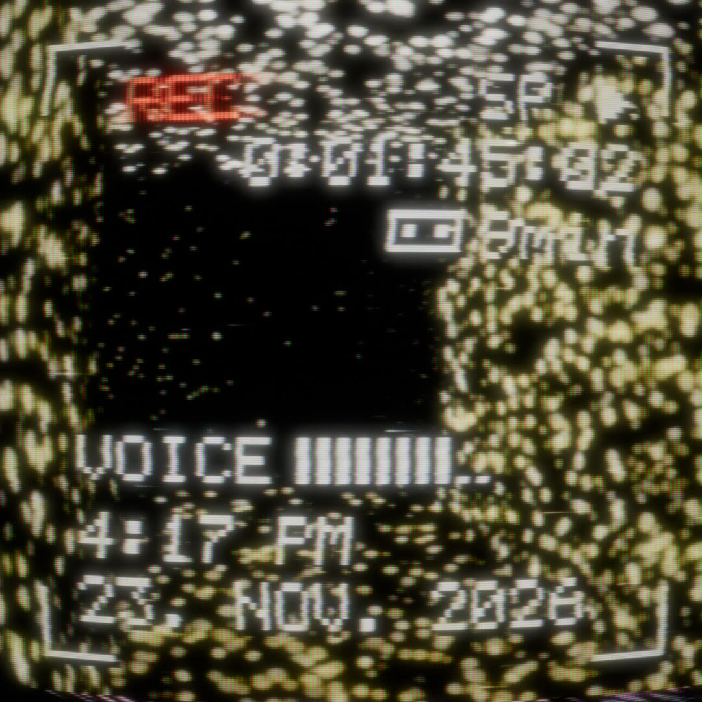

How Echo listens
An endless maze of yellowed back rooms, completely dark. You call out, and for a few seconds you can see what the sound reached: a scatter of dots on the walls, the floor, a sculpture on a plinth, something blue standing across the room. Here is how the maze is built, how a call becomes dots and echoes, how it walks itself when you just watch, and how it ends up looking like a camcorder tape played on an old television.
See it live
Seeing with your ears
Echolocation works because sound takes time. A click comes back from a wall 3 m away 17 ms later and from one 10 m away after 58 ms, and a brain that has learnt the trick hears the shape of a room in that spread. The sketch does it the other way round: every call sends out thousands of rays that travel at the speed of sound (slowed to 14 m/s so the eye can follow it) and, where each one lands, leaves a dot coloured by the surface it hit. The dots fade after ten seconds, so the maze is only ever what your last few calls reached. Everything else is black.
The place is the back rooms, the internet's endless office of damp yellow wallpaper and buzzing carpet: corridors that never end, rooms that should not be there, and the feeling of being watched. Deeper in it goes wrong. Rooms lose their ceilings, floors break into platforms, shapes are sunk half into the walls, and figures stand in the distance that you only notice by the hole they leave in the echoes. It is filmed on a camcorder: the whole frame is run through a model of a VHS signal and then drawn as a CRT draws it.
A maze that never ends
The floor plan is a grid of 2.4 m cells, grouped into chunks of 8×8. A chunk is generated from nothing but the seed and its own coordinates, so any chunk can be built at any time and always comes out the same; the seven chunks either side of the one you stand in are kept, 7×7 in all, and the rest are dropped. Inside a chunk a randomised depth-first search carves a spanning tree, so every cell can reach every other. Then rooms are knocked through: two to five rectangles of 2 to 7 cells a side lose their inner walls. A few extra walls are opened at random to make loops, three of them near the start and up to thirteen deep in, because a perfect maze has exactly one way between two points and that reads as a puzzle rather than a place.
Chunks must agree where they meet. Each shared side is opened in two places, plus about one in eight of its other cells, chosen by a hash of the side itself rather than of either chunk, so both neighbours compute the same openings without ever talking to each other.
Everything strange grows with weirdness, a number that is 0 for the first 18 m from where you start and climbs linearly to 1 at 128 m. It sets how many rooms there are and how big, the chance a room loses its ceiling (35% × w) or has one raised up to 7 m higher, the chance a floor cell becomes a platform up to 2.4 m tall (45% × w, with its ceiling raised to keep 2.7 m of headroom), how many shapes are sunk into the walls, how wrong the sculptures go, and whether a presence stands in the chunk.
One chunk at a given depth
The chunk generator, as in world.js: spanning tree, rooms, loops, the two openings per side. Rooms are shaded; lighter cells are raised platforms and hatched ones have no ceiling. Drag the depth up and the rooms multiply, grow and lose their ceilings.
The walls are real slabs 0.2 m thick, with square posts wherever walls meet, built per chunk into a single black mesh. They are drawn black on purpose: the maze is never lit, it only hides the dots behind it. Each room gets a plinth in its middle with a sculpture on it (a sphere, polyhedron, torus, box or Suzanne), and deeper in the sculptures float above the plinth, tilt, and crowd two or three to a plinth. Shapes are sunk into walls, floors and ceilings at random, up to seven a chunk at full weirdness. A presence, a large glowing shape, stands in some chunks and takes one step towards you every time you call, at most one every 1.5 seconds.
A call is four thousand rays
A call starts at the mouth, 12 cm ahead of the eyes and 11 cm below them, and sends out 4,000 rays (scaled by the call's strength: a shout up to 1.5×, a whisper half). Their directions are uniform over the sphere and then pulled toward where you face by adding 0.55 of the view direction and renormalising, so most of the rays go ahead but some always go behind. Each ray is traced on the CPU through the cell grid with a digital differential analyser: step from cell to cell along the ray and, in each cell, test only what is in it. Walls and posts are axis-aligned boxes, so they are slab tests; floors and ceilings are planes at the cell's own heights; objects are meshes, tested with three.js's raycaster only when the ray passes near them; and bodies are capsules. Rays go at most 40 m.
A ray does not draw itself instantly. It is a dash that leaves at the call's time and travels at the speed of sound; when it has gone as far as its hit, it lands: it leaves a dot there and, if it has bounces left, sets off again, reflected about the surface with a random wobble of ±0.175 per axis and 55% of its energy, until it has bounced twice or its energy falls under 0.06. Nothing draws the dashes themselves (they are invisible): you see the front of the call only as the dots appearing in order of distance.
The first 200 rays are traced the moment you call, because their distances set the sound you hear; the other 3,800 are traced at up to 600 a frame over the next frames, keeping the call's start time so they land exactly when they would have.
A call in a slice of the maze
In 2D, 600 rays at 14 m/s with two bounces. The ring is how far sound has gone; dots appear as rays reach walls, dimmer after each bounce. Raise the focus and the call leans forward, as it does by 0.55 in the sketch.
Each dot is a small disc lying on the surface it hit (its normal is stored with it), 6 cm across, grown just enough to stay about a pixel wide far away. Its colour is the surface's: wallpaper, carpet, ceiling tile or the light panels, which go from yellow to olive, brown and dried-blood red with depth, with a brick-like pattern on walls and tiles on floors so a scan has texture. A dot flashes five times brighter as it lands and fades over 0.17 s to its colour, then away with a time constant of 10 s. All dots live in one ring buffer of 400,000 instances (160,000 on phones), written in place as they land and uploaded only in the range that changed; a draw covers only as many instances as have been written.
Your own body is in the world too: a set of capsules where you stand, which casts a sound shadow behind you. And the watchers are the same body placed 9 to 16 m away with a clear line to you, facing you: they are drawn black and block rays, so you never see one directly, only a person-shaped hole in the dots on the wall behind it. Come within 7 m and it is somewhere else.
What comes back
The sound of a call is built from the 200 rays traced at once. Their hit distances are sorted, and eight echoes are taken at evenly spaced places in that list, the 1/9th to the 8/9ths of the way, so the echoes follow the room: a corridor gives a tight bunch of early echoes, a big room a spread of late ones. Each echo is the call itself, delayed by its distance over the speed of sound, at a gain of 0.9 / (1 + 0.25 d), low-passed at 3.2 kHz for the first three and 2 kHz after, and sent into a short convolution reverb. At most ten are scheduled, never closer than 55 ms apart.
Each echo plays from its direction around your head: the direction to the surface that returned it, turned into the head's own frame, fed to an HRTF panner, which models how a sound reaches each ear, so behind and above read differently from in front. With headphones, a corridor ahead sounds ahead.
Tight spaces ring. The share of hits within 1.4 m sets a flutter: a feedback delay of 11 to 16 ms (a round trip between walls about 2 m apart) with 35 to 65% feedback, darkened by a 2.6 kHz low-pass on every pass, fed by the call and its first echoes. Deeper in, the echoes go wrong with weirdness w: they come back up to 14% lower and slower, wobble in pitch by up to 60 cents at 3 to 7 Hz like a stretched tape, one in a call comes back reversed (up to 35% of calls), and past halfway a different take sometimes answers, late, quiet and muffled, from somewhere behind you (up to 45% of calls).
The same call, heard
The echoes of the call in the figure above, at its final time: delay is distance over 14 m/s, height is gain, colour darkens with order. With weirdness, the stretch, the reversed echo (striped) and the late answer (red) appear as they would.
The calls are one synthetic voice saying hello, generated with Gemini Flash 3.8's text-to-speech: eight shouted takes and nine plain ones, each trimmed when it loads so its first vowel lands exactly 60 ms in, in step with the rays leaving. A strong call picks a shouted take. Takes from a set play in shuffled order, every one before any repeats and never the same twice in a row. Breaths come from the same generated recording: light ones, deep ones (more likely deeper in, while walking, and when your voice is spent) and a gasp when it runs out.
With the microphone, your voice is the only thing that calls: footsteps stop sending rays. A rise in level over the room's noise floor is a call, its strength the level, at most one every 280 ms. Your own voice is the echo: the microphone runs through a 120 ms delay all the time, and each call opens a 1.3 s gate on it into one delay line per echo, so the echoes include the instant before the call was detected. The page then ignores the microphone until its echoes are over, so they do not call again, though through speakers your echoes can still ring; hence the advice to wear headphones.
Walking it like someone afraid of it
When you just watch, it walks itself, and it walks like a person: someone lost and nervous who keeps to the walls. It picks a destination and goes for it. The destination comes from a breadth-first search from where it stands that only passes through cells it has heard (cells some ray has hit), up to 900 of them: the unheard cells at the edge of that search are the candidates, scored by how far they are (best between 3 and 14 cells), how much they lie ahead (1.3 + cos of the angle to the heading), how much further from the start they are (exp(0.15 Δr / 2.4)), and a random factor between 0.7 and 1.3. Because the route only crosses heard cells, it can never walk into a dead end it has already heard; when there is nothing unheard in reach, it heads for the heard cell farthest out.
The route is a list of cells, turned into waypoints that keep to a wall: each one sits 0.6 m off the cell's centre toward a wall beside the path (about 10 cm from it), on the same side as before when it can. At a corner, the waypoint is pushed into the corner's outer side, so the turn is taken wide and comes out along the outer wall. At forks and rooms, at most every third cell and three times in four, it stops: puts its back to a wall if one is within a small turn, calls, looks down each way out from left to right (not the way it came), and then plans again from what that call has just revealed, which is when it may change its mind.
A route through what it has heard
Heard cells are shaded; the candidates are the unheard cells at their edge; the ring is the chosen destination. The waypoints keep 0.6 m off the centre toward a wall and swing wide through each corner's outer side.
The body turns like a body: its turn rate is a critically damped spring toward the direction of the route (stiffness 2.6, damping 3.2, at most 0.9 rad/s), always the short way round unless the turn is within 9° of a full half-turn, where it keeps going the way it already turns. It slows into turns and walks at about 1.1 m/s with a little wander in pace. A step every 0.72 m bobs, sways and rolls the head and plays a footstep, which also lights the floor round the foot with 90 rays of its own. The breath is a slow cycle, quicker deeper in and while walking.
The eyes rest on where it is going, but never on a wall. Four times a second it finds the farthest point of the route it can see, then sweeps 17 rays across ±0.8 rad around it at eye height and looks along the longest clear one, weighted toward the route; the head can turn up to 85° from the body to do it. It glances back over a shoulder at whatever is most open behind it, six times in ten as it sets off after a stop and half the time four cells into a long corridor.
A camcorder recording, as a signal
The look of a VHS tape is not a filter laid over a picture; it is what happens to a signal. So the frame is turned into one, following ntsc-rs, the open-source simulator of the NTSC and VHS chain, and run through it on the GPU at the signal's own resolution: 360 lines a frame, 640 samples per picture height, 4 samples per cycle of the colour subcarrier. (A real field has 240 lines; the extra half is a deliberate gain in definition, and every wobble and tear is scaled up to keep its size on screen.) Five passes, each a full-screen draw into a small half-float target:
| pass | what happens |
|---|---|
| 1 camera | The lit frame averaged over each sample's footprint, the highlights compressed (c / (1 + 0.6 c) after a gain of 1.4, the camera's knee), gamma-encoded at 1/2.2, low-light sensor noise added (strongest in the dark), the camcorder's display burned in, then converted to YIQ. |
| 2 encode | I and Q band-limited to 1.3 and 0.6 MHz, modulated onto the subcarrier (its phase flipping every line and every field) and added to luma: one composite number per sample. Then what happens to that signal: noise, snow (short decaying ringing bursts), the last six lines skewed right by up to 54 samples where the video heads switch, and now and then a band of torn lines rolling up the frame. A displaced line shifts the subcarrier's phase too, so its colour goes wrong, as on a real tape. |
| 3 decode | A notch at the subcarrier frequency gives luma; what it removed is demodulated back into I and Q (the subcarrier leaking through the notch is the dot crawl and rainbows). Tape noise is added: fine in luma, blotchy in chroma; a small random hue error per line; and one line in about 700 loses its colour. |
| 4 tape | The VHS record and playback filters: luma low-passed at 2.4 MHz then sharpened twice (the ringing halos beside edges), chroma low-passed at 320 kHz, arriving 4 samples late; every line displaced by the edge wave. |
| 5 output | Chroma averaged with the line above (the playback comb filter) and back to gamma-encoded RGB, with the lifted, slightly green blacks of a worn tape. |
ntsc-rs's filters are IIR filters: each output depends on the previous outputs, which is cheap on a CPU running along a line but has no direct GPU form. Here each filter's impulse response is computed once in JavaScript by running its difference equation on a unit impulse, the cascades are convolved together, and the result is run as a causal FIR filter: every sample sums its 19 to 115 predecessors in a float texture of kernels. Causal is the point: a real tape smears only forward in time, which is why VHS colour trails to the right of what it belongs to. The kernels are designed at the true sample rate, 14.318 MHz.
One line through the tape
The kernels as vhs.js designs them, applied to one line of 160 samples. Luma (light) keeps edges but rings beside them; chroma (yellow, here the I channel of a yellow input) is smeared over about 20 samples and lags to the right. The VHS amount blends each filter toward a straight line through it at the filter's own delay, so a partial amount softens the smear instead of showing two copies.
The edge wave is noise over lines and time that changes shape rather than travelling: four octaves of value noise, a strength that wanders between calm and wobbly over several seconds, a little jitter per line every field, and now and then a jolt that kinks a few lines sharply, as when the tape snags. The tracking trouble comes and goes on two slow sines, about one band every half minute, crawling up the frame at 6% of its height a second.
Played on a television
The tape's signal is then drawn the way a CRT draws it, after crt-guest-advanced, the libretro shader. The signal is linearised (gamma 2.4) and each of its lines is an electron beam: across the line, the beam's brightness falls off as 2^(−shape · (f · width)² · sat), where f is the distance from the beam's centre in lines, the shape goes from 6 at the centre to 8 at the edges, and the width runs from 1.3 for dark beams (narrow) to 1.0 for bright ones (wide): bright lines swell and nearly meet, dark ones leave black gaps. Saturated channels get thinner beams still (sat up to 1.75), which is why pure colours look striped on a real set. Each pixel sums the two nearest beams and is never allowed above full.
Along the line, the beam's spot is a Gaussian over four samples (2^(−2.4 d²)), red landing 0.3 samples to one side and blue to the other (misconvergence). Over it all is an aperture grille: vertical stripes of red, green and blue phosphor, one screen pixel each (magenta and green pairs on narrow screens), strong in the dark and weaker on bright beams (strength 1.0 to 0.35), with the light it removes given back. A blurred copy of the picture at a quarter of the signal's size adds glow (3%) and halation (6%, through the mask). The face is slightly curved and zoomed to fill the view, with no frame.
Beams and mask
Left: brightness across three lines, from the formula above; at low brightness the gaps between lines are deep, at full brightness the beams almost merge. Right: a magnified patch of the screen, beams times the aperture grille.
REC, a dying battery, the date
A camcorder burns its display into the picture before it records it, so the display here is drawn into the camera pass and goes through the tape like everything else: smeared to the right, its red REC bleeding. It is drawn on a canvas only 112 pixels tall, in a 5×7 bitmap font of its own, with every pixel either fully on or off and a one-pixel dark edging under everything, then sampled without filtering, which is what a character generator's blocky letters are. The layout is a viewfinder's: brackets in the corners; top left a red REC with a blinking dot and a battery about to die; top right SP ▶, a counter with frames and the minutes of tape left; bottom left the VOICE meter, the time and the date.
The character generator
Before you choose how to play, the camcorder is on standby: the picture is its flat blue screen, the display says STBY and the counter stands at zero; nothing runs behind the start screen. Choosing cuts to the picture and starts the counter. The tape is ten minutes long; when it runs out the display shows STOP and a blinking TAPE END for three seconds, then ◀◀ REW for three more, with the counter running back to zero, the picture rolling vertically past a black blanking bar under heavy tracking noise, and the whirr of the motor and the hiss of the tape. Then a fresh tape goes in: a new maze, back to the start screen, or straight on when watching.
A voice that tires
Clicking to shout would be too easy if it were free, so the voice tires. Each call spends 0.085 × strength of it, a call needs half a second after the last one, and the voice comes back at 7% a second once it has rested 0.8 s. A tired voice is weaker: the call's strength is scaled by 0.2 + 0.8 × voice, so fewer rays go out and the hello is quieter and slightly lower. Spend it all and it is gone: a gasp, and nothing for five seconds and until a whole bar has come back. When watching, it rests its voice by itself. With the microphone none of this applies; your real voice is limit enough.
A walk you can play back
K records a walk: the camera's position and orientation every frame, and every call (with its strength), footstep and breath, all in scene time. A take starts from a fresh state of the maze (nothing heard, everyone where they began), so playing it back reproduces it: the camera follows the recorded poses, interpolated, and the calls fire at their moments, so the dots land the same way and the presences step the same. Only the rays' random scatter and the watchers' placement differ. A take is about 15 kB a second.
For a video, the recorder drives the page on a virtual clock at a fixed 60 frames a second, however slowly each frame renders. The sound cannot be recorded from the speakers on that clock, so it is rendered offline: from the moment the capture starts, every sound goes to an offline audio context scheduled on the page's clock, and at the end it is rendered in one go and muxed with the frames.
What a frame does
The scene itself is cheap to draw: black walls and a few hundred thousand small discs. The ray tracing is on the CPU, spread over frames. The rest is the post chain, all at the signal's small size except the last pass:
| pass | size | work per pixel |
|---|---|---|
| fisheye (lens.js) | screen | 1 tap |
| camera | 640·aspect × 360 | 6 taps |
| encode | same | 19 + 29 + 56 taps |
| decode | same | 19 + 3 × 21 taps |
| tape | same | 19 + 106 + 115 taps |
| output | same | 2 taps |
| glow (2 passes) | ¼ signal | 17 taps |
| CRT | screen | 24 + 1 taps |
Phones get the pipeline's medium quality and 160,000 dots instead of 400,000.
Controls
- At the start, choose how to explore: your voice (the microphone), clicking to shout, or watching. V brings the choice back.
- WASD or the arrow keys walk; the first click grabs the mouse to look around, Esc lets go. On touch, drag to look and hold to walk.
- In click mode, click (or E) to shout. Auto walk walks by itself, calling every few seconds (Call every).
- The scan: Rays per call, Bounces, Sound speed, Memory, Dot size, Forward focus; Mic sensitivity.
- The picture: Fisheye, VHS, CRT, Camcorder display; Tape sets its length in minutes.
- The body: its sound shadow, Footsteps reveal the floor, Watchers in the distance, Breathing; two debug views show the maze and the map.
- K records a walk (again to stop); the Recording section saves, plays, or loads a take.
- Auto change (on by default): a new maze every 120 s (Change every, 20–180 s), not while the microphone is on or a take records or plays.
- R for a new maze, M or the speaker button toggles sound, Space pauses, F goes fullscreen, Tab hides the panel, P saves a screenshot (Shift+P at 2×).